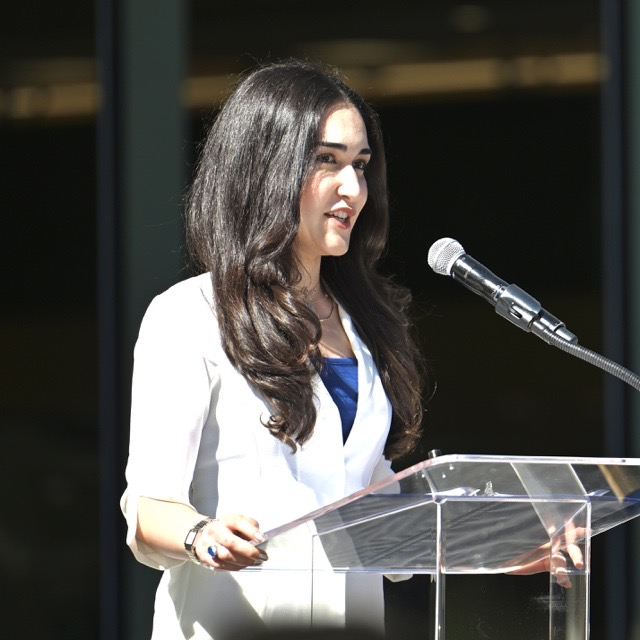

PhD Student · UC Berkeley EECS
I am a fourth-year PhD student in Electrical Engineering and Computer Sciences at UC Berkeley, advised by Prof. Narges Norouzi.
I am driven by the question: How do humans interact with and learn alongside AI systems? My research focuses on modeling messy, real-world human behavior and developing scalable methods for evaluating AI assistants. I currently explore these ideas in intelligent tutoring, where I build LLM-based user simulators that capture not only what learners do, but how they reason.
I am also the president of Computer Science Graduate Entrepreneurs (CSGE) at Berkeley, where we support CS PhD students interested in turning their research into startups.
Prior to my PhD, I completed my Bachelor of Engineering in Computer Science and Communications Engineering at Waseda University in Tokyo, Japan, where I also grew up.
Outside of academia, I enjoy cooking and weightlifting :)
We close the sim2real gap in LLM student simulators, making them reliable enough to evaluate AI tutors
We model students' latent reasoning jointly with their actions, so simulators think like learners rather than just imitating them
AI tutors should be evaluated beyond pedagogical soundness
Canadian AI courses sit behind longer prerequisite chains than US ones, delaying student access to AI
LLMs recover CS1 knowledge components that closely match an expert-generated list
Scratch project type biases computational thinking scores, confounding measured gender differences